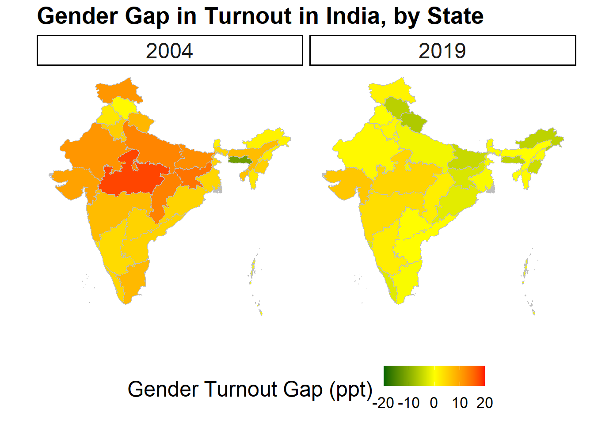
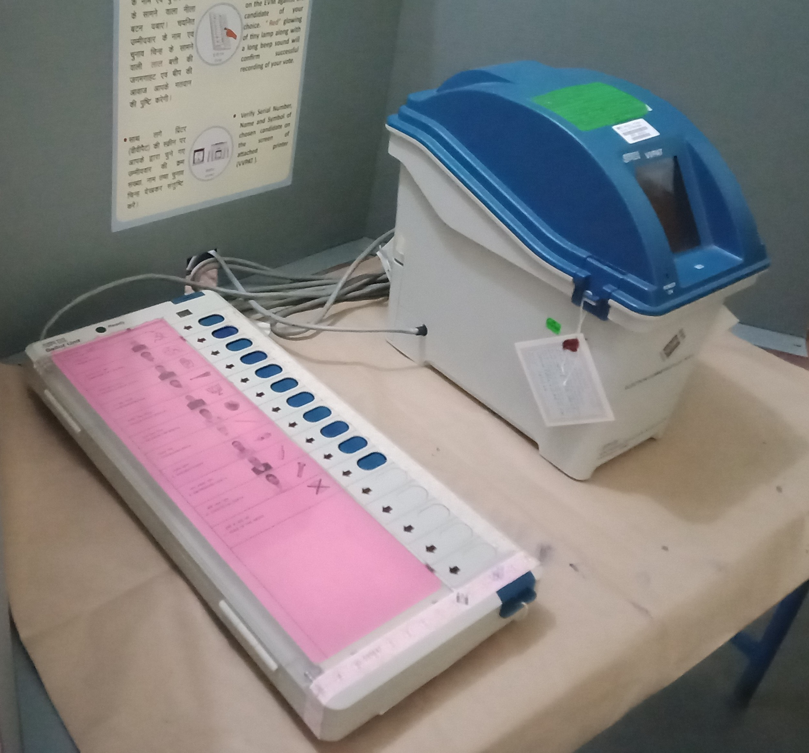

Research
Research

Dissertation
Why Women Vote: When and How Clientelism Closes the Gender Turnout Gap (Book Project)
When do women turn out at equal rates to men? My dissertation re-investigates this question in the context of developing countries. Existing theories of women’s political participation are largely resource-based, yet in many developing countries, women turn out at par with men in the face of low levels of economic development and female labor force participation, and despite gendered differences in individual-level resource endowments. Based on an in-depth investigation of India, I argue that there is a second path to women’s equal political participation that does not rely on individual-level resources, but instead depends on clientelism and household support for female turnout. Where households are supportive, they can bridge the resource gap for women. Household support, in turn, depends on high levels of clientelist returns to a vote. I provide several pieces of empirical evidence from India consistent with this theory, based on two original surveys and a novel panel dataset on the clientelist party mobilization. I show that female turnout is higher in a poorer and more clientelist state than in a better developed but less clientelist state, and that household support for female turnout – but not other forms of political participation – is high under clientelism. I also demonstrate that increases in levels of clientelist mobilization – measured as a rise in the number of ethnic groups targeted by clientelist parties – leads to smaller gender turnout gaps at the constituency level across several states. My research has important implication for our understanding of the relationship between development and female political participation, as well as the consequences of clientelism.

Working Papers
How Clientelist Party Mobilization Closes the Gender Turnout Gap: Theory and Evidence from India (JMP)
I argue that besides the traditional, resource-based explanations of women’s participation, there is a second path to women’s equal electoral participation that depends on clientelist mobilization of household support for female turnout. Where households are supportive of women’s participation, they can bridge the resource gap to enable female turnout even in the most unlikely of contexts, namely where women face a lack of resources and high costs to participation in public life. But households will only be supportive were returns to a vote are high. I develop a typology of clientelist regimes that posits that both the of the clientelist exchange as well as the of the clientelist resources determines the value of a vote. Returns to a vote should be highest when clientelist parties rely on post-election resource sharing arrangements that provide selective post-election access to state resources; and lowest when clientelist parties instead bank on privately funded electoral handouts. I test this theory in India, a particularly puzzling case of gender turnout parity. I use the fact that in India, ethnicity is politically salient and clientelist parties purposefully incorporate ethnic groups into their leadership, while excluding others, to send signals about the future distribution of state resources. Members of ethnic groups who have a co-ethnic in any party’s leadership will expect the highest returns to a vote, and therefore be most likely to support female turnout. Using a novel panel dataset on the number and types of ethnic groups incorporated into state-level party leadership of all major parties for all state elections in Madhya Pradesh and Uttar Pradesh from 1977 through 2007, I show that a) the number of ethnic groups incorporated went up over time, and that b) a rise in the number of politically incorporated ethnic groups before an election leads to a drop in the gender turnout gap during the election.

Exclusion Before Elections: How Faulty Voter Lists Disenfranchise Women in India
Voting is the most fundamental act of political participation in a democracy, as well as the main mechanism for holding officials accountable. The accuracy of voter lists -– the extent to which all eligible adults are enrolled to vote and all ineligible individuals are deleted from the list -– therefore is an indicator of the health of a democracy. While under-enrollment and the extent of “deadwood” on voter lists have come under considerable scrutiny in the United States, the accuracy of electoral rolls in developing countries has not attracted the same scholarly attention so far. I examine the quality of the electoral roll in India, the world’s largest democracy, using original data from two full village censuses and a large-scale voter survey. I find that voter lists simultaneously show under-enrollment – that is the disenfranchisement of eligible adults – as well as deadwood; and that the deadwood masks part of the under-enrollment. This pattern is starkest for women, particularly young women, who are most likely to migrate in India and often dependent on family support for their voter registration. The reason for the poor quality of voter lists, I argue, lies in the incentive structure for low-level officers in charge of maintaining the decentralized rolls.

Voting as a Family? Investigating Agency and Vote Choice in India (with Rahul Verma, CPR, Delhi)
How much agency do they hold over their vote choice? Research shows that in many developing countries, individuals are socially and economically dependent on the household; accordingly, household members coordinate on a host of behaviors, including political participation. Where intra-household bargaining power is gendered, women in particular might therefore not exercise full agency over their vote. But how do we measure agency over vote choice? In many developing countries, policy preferences do not link neatly parties or candidates. Furthermore, in clientelist settings, any kinds of political preferences might be best served by the patron party. Consequently, it can be rational for all family members to vote for the same party, even if they differ starkly on policy priorities. Voting for the same party as other household members, therefore, is not proof of a lack of women’s agency. We overcome this problem by using a novel measure of preference-consistent voting that checks whether women’s vote is internally consistent, i.e., whether women voted in line with their own stated policy preferences, or instead subordinate their own preferences to other household members’ priorities. Contrary to expectations based on the literature, we find that women no less likely than men to vote in accordance with their stated preferences; that women are no more likely than men to falsify their own preferences and vote according to other household members’ preferences; and that household disagreement on policy priorities does not predict women’s preference-consistent voting.
Ethnic Identity Salience and Attitudes Toward Women
Are political attitudes affected by which of their multiple ethnic identities is most salient for a person? If each ethnic identity comes with certain social norms that are practiced and enforced by an ethnic group, then making one identity salient over another should restrict the choice space of acceptable behavior and attitudes accordingly. I test this theory using particularly meaningful attitudes: men’s attitudes toward women’s political and economic participation, which have been shown to affect women’s labor force participation and partaking in the political process around the world. Using an original online survey experiment in India, I show that it indeed matters which ethnic identity is most salient for a man. Males who were primed on their religious identity showed less support for women’s political and economic participation than those in the control group. The results were less clear-cut for the treatment that primed men on their caste identity: while males self-identifying as Brahmins, members of other forward castes or Dalits increased their support for women’s participation when treated, men who belong to the Other Backward Classes (OBC) lowered their support when treated.
(Manuscript available upon request.)

Work in Progress
The Challenge of Measuring the Gender Turnout Gap
Studies of women’s electoral participation face a major data constraint: very few countries collect and publish gender-disaggregated turnout data. Accordingly, previous scholarship mostly relied on survey data to gauge women’s electoral participation relative to men’s, despite the fact that survey respondents notoriously over-report having voted and we know nothing about whether this behavior is gendered. I explore this potential source of error by comparing a new dataset of administrative turnout data disaggregated by gender and survey-based estimates of turnout among men and women for about two dozen countries worldwide. I find that men overreport their turnout at even higher rates than women, obfuscating the gender turnout gap, that is, the difference between male and female turnout rates. This finding has important implications for scholars studying electoral participation, as survey results can either hide or exaggerate actual gender differences in turnout.